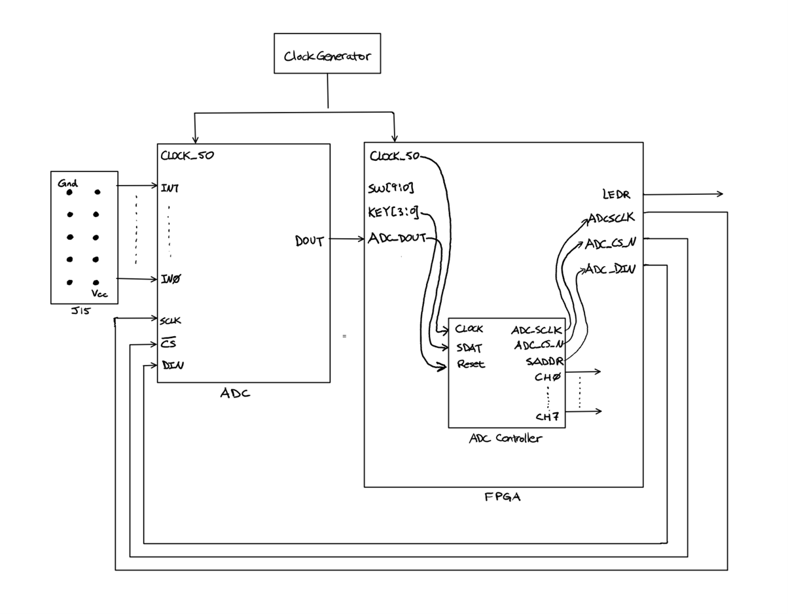
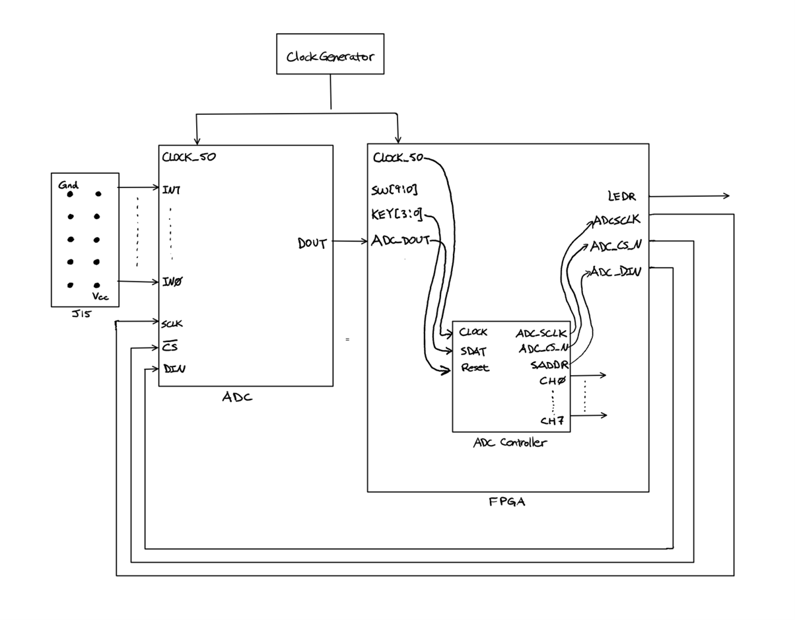

Cycle 63
An Interactive Hardware Game
Introduction
Cycle 63 is a single player simulation game observed from the first person point of view. The game screen consists of the background, which is an image of a two-lane road, and three objects, which include two randomly recurring obstacles and a bike handle. In the original plan, there are six external devices: a laser, a laser receiver (phototransistor), a pedal, a handle bar, and two leaf switches. In the completed project, there are two external devices, a bike pedal and a micro switch. The inspiration and motivation of this game came from the observation that people tend to sit in front of their screen too long while playing video games. The lack of exercise causes many health issues, including diabetes, cardiovascular disease, and high blood pressure. With the interactive component added to the game, the user is able to play and exercise at the same time, thus solving the problem.
The aim of this simulation is to “move forward” in the game while avoiding the obstacles. The speed of the movement is controlled by changing the frequency of pedaling on the bike. In addition, switching lanes is done by turning the bike handle.

Game Flow
During game mode, two lanes will show on the screen, the left lane and the right lane, with a randomly recurring obstacle on each lane. The default starting position of the handle-bar is on the right side of the screen.
During the movement of the obstacles (the red squares), their length and width increase by the size of one pixel for a downwards shift of every two pixels, and their horizontal positions change by the size of one pixel for a downwards shift of every 4 pixels. The obstacles’ speed depend on the frequency at which KEY1 is clicked (debug mode), or the frequency of pedaling (game mode). When KEY3 is pressed (debug mode) or when the handle bar is turned (game mode) to the left, the player on screen moves to the left lane of the road, and when KEY2 is pressed or when the handle bar is turned to the right, the player on screen moves to the right lane of the road.
When either obstacle reaches the bottom side of the screen, that particular square is reset to the position at the top of the screen. At the same time, the program checks for whether the handle is located on the same side of that square. If the obstacle and the handle bar are on the same side of the road, then the game is over. The timer display on HEX4 and HEX5 show how long a particular game is running.
Modules
1. Simulation Module (top level module)
This module passes the user-end inputs (SW, KEY, CLOCK_50, and GPIO_1, which is connected to the micro switch) and outputs (LEDR, HEX, and all VGA output parameters) into the ADC control, ADC adapter, get pedal signal, hex decoder, and control-to-data modules accordingly.
2. Control-to-Data
This module contains the signal wires and connects the FSM and the Datapath through these wires.
3. Finite State Machine (FSM)
The FSM controls the current and next states of logic and sends out different signals to the Datapath according to the varying states. Within the FSM, a delay counter is used to control the number of clock cycles per frame (around 500 frames/second) and a frame counter is used to control the number of frames between each update of the object’s location on screen (50 updates/second). The seconds counter and speed counter is also implemented within the FSM and outputted to the top level module.
4. Speed Counter
The time counter sends out an enable signal every time the pedal completes one of its cycles (triggers the micro switch). The speed counter catches this signal and counts the number of ¼ seconds that passed during that pedal cycle. Once a signal is received, the speed counter also translates the time passed into the period between which the objects move (For example, move down one pixel per 2 updates for a higher speed or one pixel per 10 updates for a lower speed).
5. Datapath
Receives signals from the FSM and data from random number generator modules to complete the task of moving objects on screen. A cycle in the drawing process goes like this: draws two squares (the obstacles), followed by the bike handle, according to its current position (left or right), followed by erasing the squares (cover the squares’ pixels with the corresponding colours from the background), and finally updates the new location of the squares.
6. VGA Adapter
All graphics are shown on the monitor after a translation of data from the top level module through the VGA Adapter. The adapter takes the X and Y coordinates and plots the colour of that pixel from the specified memory onto the screen.
7. Memory Modules
The intro screen, background, handlebars, and gameover screen images are stored as pixels of colours into the VGA memory. The background and intro screen are both 360x240 pixels images and the handlebar is 120X50.They all have 3-bit colours for each pixel.
Overall Design Block Diagram
Challenge with Sensors
Phototransistor
At the start of the project, I planned to place a laser pointer and a laser receiver on the pedals to trigger the completion of a cycle. I connected the laser receiver to the ADC pins on the DE1 SoC board. The schematics of this part is shown below. The hex display properly shows the translated digital values received by the phototransistor. However, as I tried to use this in the code as a replacement of KEY1, the speed of the obstacles did not change.
 

Micro Switch
Next, I tried placing a micro switch below the pedal so that it would be triggered every time the pedal reaches the lowest position. The switch is connected to the GPIO pins on the DE1 SoC board, and the code is attached in Appendix C. However, I realized that although the LED lights up every time the switch is pressed during the testing, there are still oscillations in the signals since the switch is a mechanical device. As a result, the program receives alternating high and low signals at very high frequencies and the game does not work properly. I eventually had to fix the module so that these oscillations do not trigger the condition.